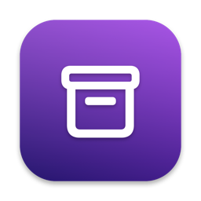

RelicdeskSupport
Answers to common questions are below. If yours isn’t, email help@fitztoppicks.com with your Mac model and macOS version.
Using Relicdesk
Which files does it open?
dBase, FoxPro and Clipper tables (.dbf) with their memo files, and Microsoft Project XML plans. It recognises Access databases, Project .mpp plans and Windows Media Center recordings and shows what they are, but doesn’t open them. Project on a PC can save any plan as XML.
A table says its memo file is needed.
Long text is kept in a second file next to the table (.dbt or .fpt). Click Choose Folder… and pick the folder that holds both, so macOS lets Relicdesk read it.
Letters look wrong (é instead of é).
The table uses another code page. Open Code page › Change on the table and pick the right one (DOS 437 or 850 for old DOS files, Windows 1252 for Windows ones).
Relicdesk license
What’s free, and what does a key add?
Without a key you can open, search, sort and read every file for as long as you like, and exports hold the first 100 rows. A key adds every row in every export, on up to 3 Macs. It’s a one-time purchase on Gumroad, with no subscription.
Where do I enter my license key?
Choose Relicdesk › Settings…, open the Pro tab, paste the key from your Gumroad receipt and click Activate.
How do I get updates?
Relicdesk checks for updates on its own; you can also choose Check for Updates… from the Relicdesk menu. Updates are free.
Purchases
How do I get a refund?
Gumroad handles payment. Reply to your Gumroad receipt or email help@fitztoppicks.com.
Do I have to pay again on another Mac?
No. One license key works on up to 3 of your Macs. Download the app again from your Gumroad receipt or library and enter the same key.